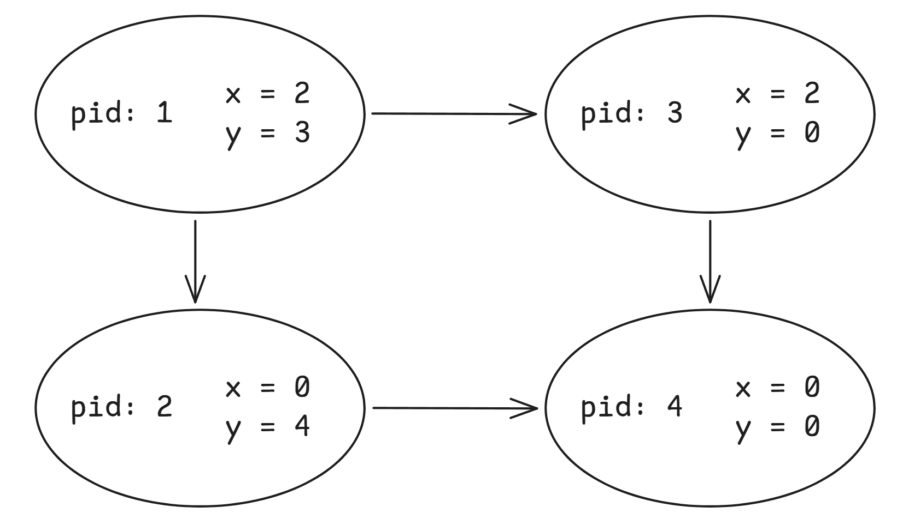
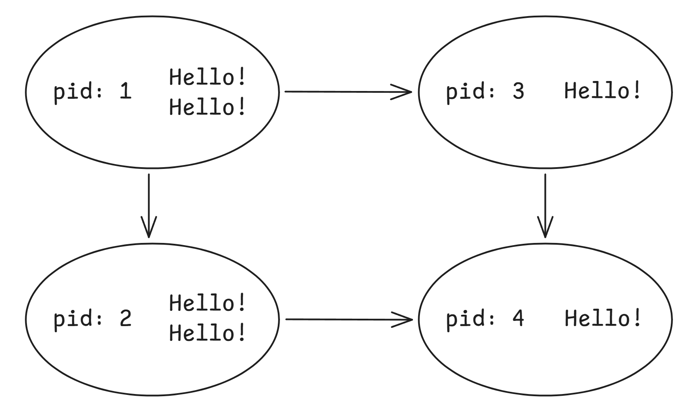

程序和进程
内容回顾
- 应用视角下的操作系统: 对象 + API
- 硬件视角下的操作系统: 程序
- 数学视角下的操作系统: 状态机
程序与进程
程序是状态机的静态描述，进程是动态运行的状态机。
进程是动态运行的状态机，当然需要 os 实时保存一些状态信息。

proc.c:
这个示例展示了如何获取进程的基本信息：除了使用 API （例如 getpid 是一个系统调用），Linux / proc 文件系统允许我们使用文件 API（"everything is a file"）访问当前进程的 ID、状态信息、命令行参数和工作目录等元数据。
运行程序可以看到如下输出（可以通过 ./proc | head -n 10 来指定显示的行数）：
Output
proc 程序输出
1pid: 1906250 // 进程 id2ppid: 1904150 // 父进程 id34--- Additional Process Information ---5User ID: 1000 // 进程所有者的用户 id6Group ID: 1000 // 进程所有者的组 id7Effective User ID: 1000 // 用于权限检查的 id8Effective Group ID: 1000 // 用于权限检查的 id9Max open file descriptors: 1048576 // 进程可以同时打开的最大文件数量10Process priority: 0 // 进程的优先级1112--- Process Status (/proc/self/status) ---13Name: proc // 进程名称14State: R (running) // 进程当前状态15PPid: 190415016Uid: 1000 1000 1000 100017VmSize: 2776 kB // 虚拟内存大小1819--- Command Line (/proc/self/cmdline) ---20Command line: ./proc // 程序执行时的完整命令行2122--- Current Directory (/proc/self/cwd) ---23Current directory: /home/ubuntu/os/processes // 程序的工作目录
testkit: Writing test cases fearlessly! 这是同学们的第一个测试框架：支持单元测试和系统测试，自动注册测试用例并在程序退出后运行。最重要的特点是它使用简单：你只需要包含 testkit.h，并且链接 testkit.c 即可。
进程（状态机）管理
进程管理意味着进程状态机的管理，os 显然是进程状态机的管理者。
直观的想法是：创建状态机 spawn(), 销毁状态机 _exit()
UNIX 的做法是：复制状态机 fork(), 复位状态机 execve()
fork()
man fork: 可以查看 fork 函数的签名和解释
如何区分两个状态机？新创建的进程（子进程）返回 0。
C
fork_example.c
1#include <unistd.h>2#include <stdio.h>3#include <sys/types.h>45int main()6{7 pid_t x = fork();8 printf("%d\n", x);910 if (x == 0)11 printf("%s\n", "I'm child !");12 else13 printf("%s\n", "I'm father !");1415 return 0;16}
当子进程销毁时，会向父进程发送信号。然而，当父进程提前因为某些原因销毁后，子进程会被托管到系统进程进行”托孤”。
创建一棵进程子树: 创建一棵 5 层的进程树，并随机退出其中的一些进程——我们可以观察进程退出前后父子进程的关系。
fork 会完整复制状态机，包括寄存器和内存的值，子进程和父进程有完全相同的虚拟地址，但二者映射到的实际物理地址不同（Copy-On-Write 机制除外）。
Output
fork 程序输出
1PARENT PROCESS:2 PID: 1934705, PPID: 19128653 fork() returned: 1934706 (child's PID)4 Child PID: 19347065 Address of global_var: 0x559ced71d0106 Address of local_var: 0x7ffd58ed97707CHILD PROCESS:8 PID: 1934706, PPID: 19347059 fork() returned: 010 Address of global_var: 0x559ced71d01011 Address of local_var: 0x7ffd58ed9770
阅读程序，判断一共创建了几个状态机：
C
program1.c
1// program 12pid_t x = fork();3pid_t y = fork();4printf("%d %d\n", x, y);
C
program2.c
1// program 22for (int i = 0; i < 2; i++) {3 fork();4 printf("Hello\n");5}


理解 fork(): fork() 会完整复制状态机；新创建的状态机返回值为 0，执行 fork() 的进程会返回子进程的进程号。同时，操作系统中的进程是并行执行的。程序的精确行为并不显然——model checker 可以帮助我们理解它。
execve()
man execve: 可以查看 execve 函数的签名和解释
execve 可以将当前进程重置成一个可执行文件描述状态机的初始状态，而操作系统维护的状态不变（进程号、目录、打开的文件等等）。
execve 是唯一能够”执行程序”的系统调用，因此也是一切进程通过 strace 的第一个系统调用。例如，当你在 shell 中输入 ls 命令时，发生的过程是：
- Shell 解析命令：
bash识别ls命令 - Fork 创建子进程：
shell调用fork()创建子进程 - Execve 替换程序：子进程调用
execve()将自己替换为ls程序
UNIX 中，创建一个新进程的方式就是 fork + execve。
理解 execve: execve 有三个参数：path, argv, envp，分别是可执行文件的路径、传递给 main 函数的参数和环境变量。execve 是一个 "底层" 的系统调用，而 POISX 额外提供了 execl 等库函数便于我们使用。请搜索互联网或询问人工智能理解它们的区别，并阅读它们的手册。
总结
Take-away Messages 操作系统通过进程抽象为应用程序提供了独立的执行环境。进程是操作系统中最基本的资源分配单位，它包含程序本身的状态和操作系统内部的状态。操作系统提供了一系列系统调用 (如 Linux 中的 fork、exec、wait 和 exit，Windows 中的 CreateProcess 和 TerminateProcess) 来创建、管理和终止进程。